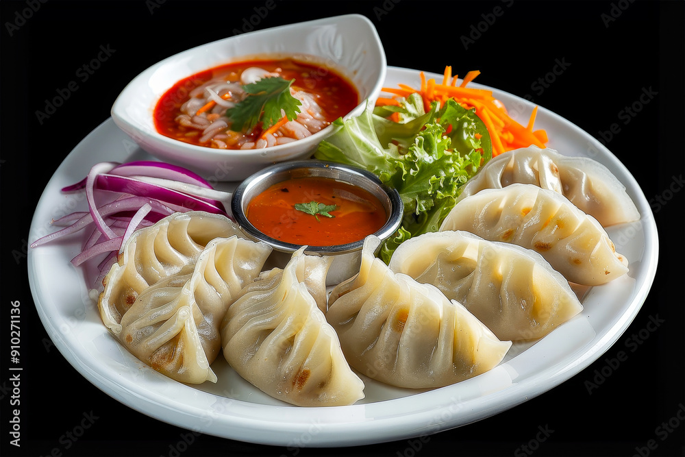

MOMO

Description
Momos are made from a thin dough wrapper that is filled with a mixture of minced meat, vegetables, herbs, and spices. They are usually served with a sauce called achar, but can also be used in soups.
Ingredients
- minced meat
- onion
- chopped coriander
- ginger and garlic paste
- coriander powder
- turmeric
- cumin powder
- oil
- salt
- flour
Step
- Preparing the fillings
- Add 1 grated onion to the minced meat.
- Add half a tablespoon of turmeric powder. This is to add a bit of color to the meat.
- To enhance the flavor of the filling add 2 tablespoon of salt.
- Add 2 tablespoons of grated chilli. You can add a bit more if you want the momos to be spicy.
- Add 2 tablespoons of ginger and garlic paste each.
- Add half a tablespoon of coriander powder to make the filling taste a bit sour.
- Mix the spices with the meat.
- Add 2 tablespoons of vegetable oil and mix it again. The oil prevents the filling from getting too dry (Nepalese love momo with juicy fillings).
- Add finely chopped coriander.
- Mix them well.
- Making the momo wrapper
- Put the flour into a bowl.
- MAdd water a little at a time to the flour to make dough.
- Knead the dough for a few more minutes. This makes the dough easier to use.
- Pinch off a bit of the dough (the amount depends on how big you want the wrapping to be).
- With a rolling pin roll the dough as thin as possible into circular shapes (don't make them too thin or too thick) the size of a glass.
- Cooking the momos
- Put around one tablespoon of the filling into the centre of the wrapping.
- Pinch one edge of the wrapping to the other edge then twist it.
- Keep doing this until the filling is covered (make sure the wrapping fully covers the filling otherwise the momos may break when steamed).
- Oil the bottom of the steamer. This prevents the momos from sticking.
- Put the momos in a systematic order so that they don't touch each other.
- Steam for 20 - 30 mins.